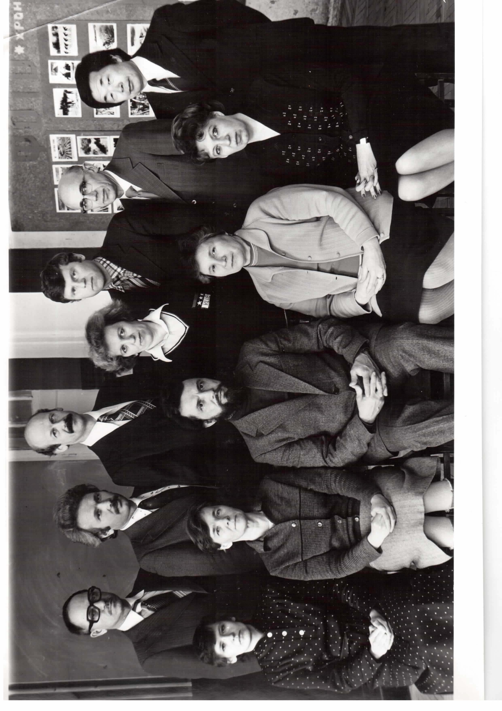
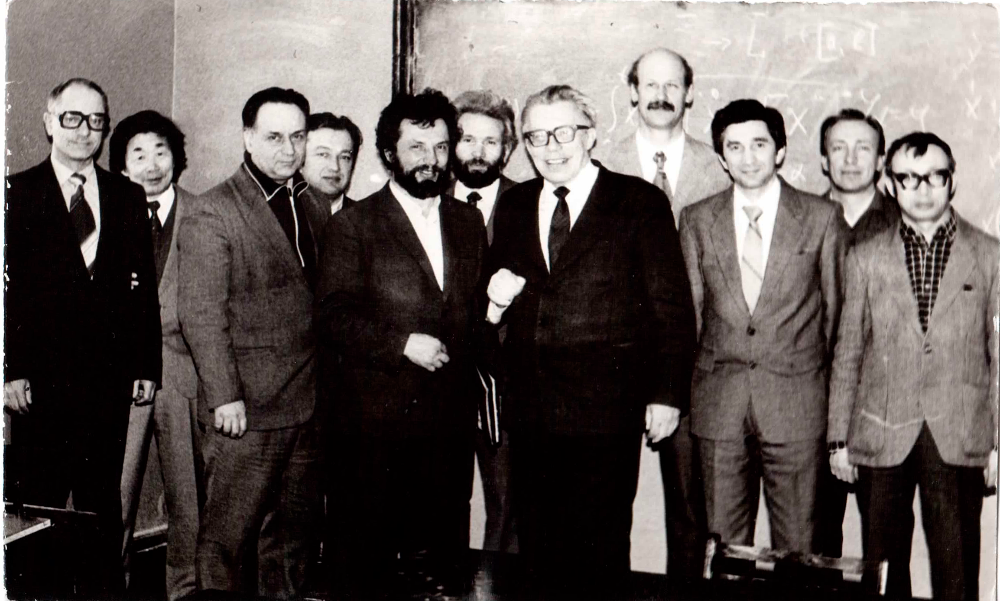
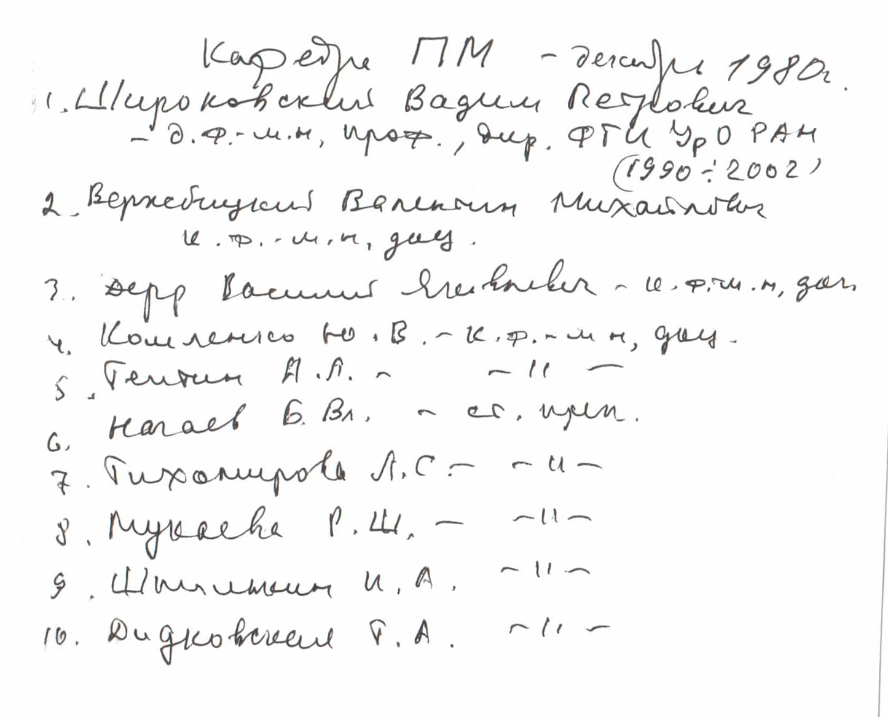
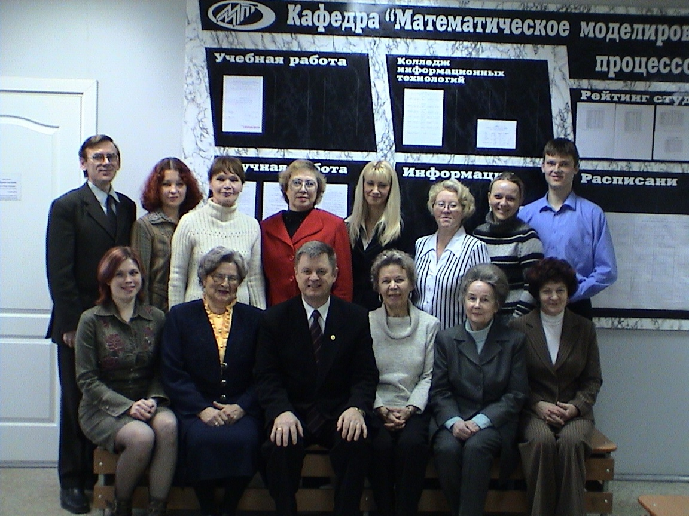
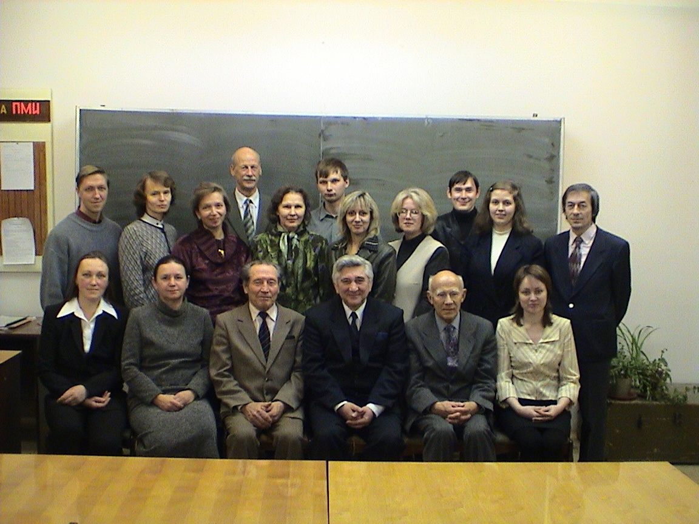

Юбилейные мероприятия, посвященные 50-летию кафедры
«Прикладная
математика» –
«Прикладная математика и информационные
технологии»
О мероприятиях
В 2025 году отмечается 50-летний Юбилей кафедры «Прикладная математика» – «Прикладная математика и информационные технологии» (ПМ – ПМиИТ).
По этому случаю была подготовлена юбилейная статья, посвящённая истории создания и развития кафедры.
Читать статью «Полувековой юбилей специальности ПМ»
Кафедра была создана с целью популяризация преподавания математики и информатики как основы высшего профессионального инженерного образования, повышение престижа научных исследований на основе математического моделирования и информационных технологий, а также обмена знаниями и передовым опытом в области прикладной математики, информационных технологий, вычислительной механики и моделирования технических и социально-экономических систем.
Приказ о подготовке и проведении мероприятий, посвященных 50-летию кафедры ПМ-ПМиИТ, утвержден прикзом № 574 ректора ИжГТУ А.В. Губерта от 16.05.2025
Приказ о подготовке и проведении мероприятий, посвященных 50-летию кафедры ПМ-ПМиИТ
История кафедры
1975: Основание кафедры
В 1975 году на основании Приказа Министерства высшего и среднего специального образования РСФСР за №316 от 12.06.1975 ректором Ижевского механического института А.М. Липановым издан Приказ №1127 от 31.12.1975 о создании на приборостроительном факультете профилирующей кафедры прикладной математики (ПМ) для подготовки инженеров-математиков. Исполняющим обязанности заведующего кафедрой прикладной математики назначен к.т.н., доцент кафедры вычислительной техники Н.И. Калядин.
1989: Создание кафедры ММПТ
Приказом ректора ИжГТУ И.В. Абрамова №14 от 15.09.1989 с целью повышения роли математического образования на Машиностроительном факультете ИжГТУ была создана кафедра «Математическое моделирование процессов и технологий» (ММПТ), заведование которой принял д.т.н., профессор Русяк Иван Григорьевич.
1993: Переименование
В 1993 году кафедра ПМ переименована в кафедру «Прикладная математика и информатика» (ПМИ).
2020: Объединение кафедр
Приказом ректора В.П. Грахова № 835 от 03.09.2020 г. с целью повышения качества подготовки кадров была образована кафедра «Прикладная математика и информационные технологии» (ПМиИТ) на основе объединения кафедр «ПМИ» и «МОИС». Заведующим объединенной кафедры ПМиИТ был назначен д.т.н., профессор Русяк Иван Григорьевич.
К юбилею были подготовлены галереи преподавателей и заведующих кафедры ПМ-ПМиИТ
Программа развития кафедры
Программа развития кафедры «Прикладная математика и информационные технологии» (ПМиИТ) на период с 2025 – 2030 гг.
Программа развития кафедры ПМиИТ основывается на предположениях о востре-бованности:
• специалистов в области прикладной математики для решения задач импортозамещения программного обеспечения;
• специалистов в области искусственного интеллекта и информационных технологий в связи с расширением областей их применения.
На заседании кафедры был принят план мероприятий по повышению эффективности деятельности кафедры в части оказания услуг и выполнения работ:
Фото-Галерея
50 лет кафедре ПМ-ПМиИТ: история в фотографиях










Достижения кафедры
На кафедре «Прикладная математика и информационные технологии» в 1996 году была создана научная школа «Математическое моделирование технических и социально-экономических систем» , которая является Ведущей научной школой ИжГТУ имени М.Т. Калашникова. Основателем научной школы и ее научным руководителем является академик РАН и РАРАН, доктор технических наук, профессор Липанов Алексей Матвеевич , руководителями научной школы являются академик РАРАН, доктор технических наук, профессор Русяк Иван Григорьевич и доктор физико-математических наук, профессор Тененев Валентин Алексеевич
Тематика исследований в рамках научной школы:
•динамика, баллистика, управление движением летательных аппаратов;
•моделирование полигонных испытаний, визуальные технологии виртуальной реальности;
•цифровые модели объектов, систем и процессов (цифровые двойники);
•численное решение пространственных нестационарных сопряженных задач гидродинамики и тепломассообмена;
•математическое компьютерное моделирование работы газодинамических устройств;
•машинное обучение и интеллектуальные методы обработки данных;
•математическое компьютерное моделирование социально-экономических систем.
В рамках научной школы преподавателями и сотрудниками кафедры получен целый ряд фундаментальных и прикладных результатов, которые отражены в многочисленных публикациях и в отчетах по Грантам и хоздоговорным научно-исследовательским работам.
Выдающиеся ученые, труды которых внесли существенный вклад в становление и развитие кафедры «Прикладная математика и информационные технологии», ее образовательного и научного потенциала представлены в Галерее Ученых.
За время существования кафедры в рамках научной школы были защищены 6 докторских диссертаций и 39 кандидатских диссертаций. Выпускники кафедры, защитившие докторские диссертации представлены в Галерее Докторов наук кафедры . Выпускники кафедры, защитившие кандидатские диссертации представлены в Галерее Кандидатов наук кафедры.
Основные проекты, выполненные в рамках научной школы
Контактная информация
Кафедра ПМиИТ:
Русяк Иван Григорьевич, зав. каф. «ПМиИТ»
тел. 8 (3412) 77-60-55, доб. 6298
e-mail: mmpt@istu.ru
Отзывы выпускников
Иван Басов
Выпуск 2022 года
"Кафедра ПМиИТ дала мне прочную основу для моей карьеры в IT. Преподаватели не просто давали знания, а учили мыслить аналитически и решать сложные задачи. Особенно благодарен профессору Русяку И.Г. за его вдохновляющие лекции по математическому моделированию."
Сейчас: Backend developer Carbon Soft
Тимур Насридинов
Выпуск 2019 года
"Обучение на кафедре помогло мне развить не только технические навыки, но и критическое мышление. Практические занятия по машинному обучению стали отправной точкой для моей карьеры.
Сейчас: System Engineer, Gcore, Люксембург
Яна Третьякова
Выпуск 2020 года
"Благодаря профессиональным преподавателям кафедры «ПМиИТ» и интересным учебным материалам я получила ценные знания и навыки, которые пригодились мне в будущей карьере. Уровень подготовки на кафедре оказался высоким, что способствовало моему активному участию в научных и практических конференциях."
Сейчас: Администратор проектов на Ижевском механическом заводе